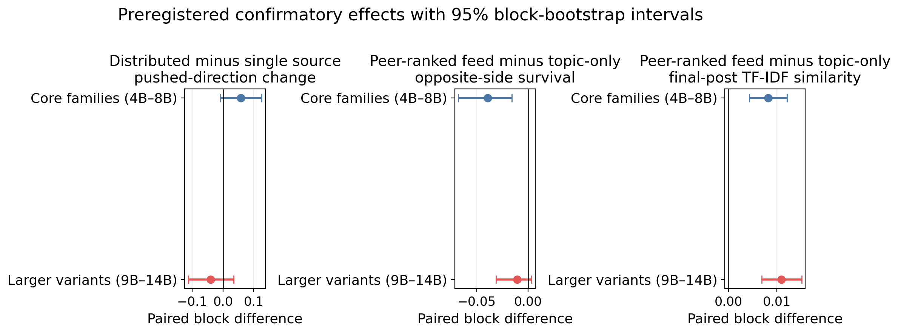
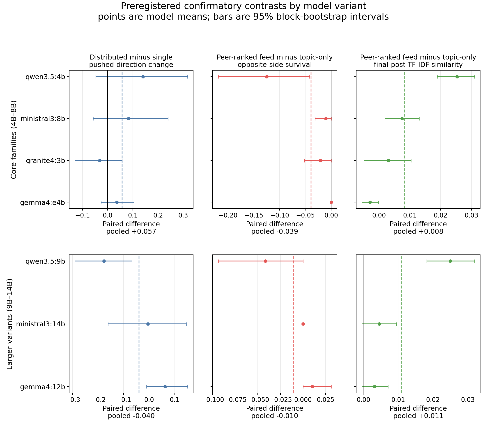

Rana Muhammad Usman
Independent researcher
Correspondence: usmanashrafrana@gmail.com
Code and data. The complete pipeline, frozen protocol, configurations, summary tables, and paper source are available at https://github.com/ranausmanai/synthetic-social-networks. Raw traces are available at https://huggingface.co/datasets/ranausmans/synthetic-social-networks. The release contains 59,776 production posts from 528 trials, including every confirmatory post, peer vote, exposure record, and agent endpoint.
Population-level behavior in large-language-model (LLM) agents cannot be characterized by single-agent benchmarks. We introduce PV-SST, a peer-voted social-platform testbed, and report a separately frozen, preregistered matched-exposure experiment spanning four topics, four unused seeds, four open-weight model families, and three prespecified larger variants. The experiment comprises 448 trials and 112 complete model-by-topic-by-seed blocks.
Relative to a topic-only control, a feed of previous-round peer posts ranked by peer-generated likes increases final-round lexical similarity in both the four-family core panel (paired mean difference +0.0082 TF-IDF cosine units, 95% block-bootstrap CI [0.0043, 0.0121], randomization p=0.000105, n=64 blocks) and the three-variant size extension (+0.0109 [0.0069, 0.0151], p=0.000001, n=48). This contrast bundles peer-post exposure with ranking and therefore does not identify a ranking-only effect. Opposite-side survival falls in the core panel (-3.9 percentage points [-6.8, -1.6], p=0.0068) but not conclusively in the larger variants (-1.0 pp [-3.1, 0.4], p=0.50).
Holding adversarial impressions fixed, four distributed sources do not reliably move honest-agent stance more than one source. The preregistered distributed-minus-single contrast is positive but inconclusive in the core panel (+0.057 [-0.009, 0.125], p=0.112) and negative in the larger variants (-0.040 [-0.113, 0.035], p=0.332), failing the prespecified cross-model and cross-topic consistency criterion. Thus the robust result is lexical convergence under the tested peer-ranked feed, not general opinion capture or a general coordination advantage. The study evaluates synthetic LLM-agent populations; it does not estimate effects on people or production platforms.
LLM agents increasingly share environments as assistants, simulated users, customer-service systems, and autonomous participants. Existing evaluations mostly measure isolated responses or task completion. Platform behavior, however, is recursive: agents produce content, other agents react, platforms rank the resulting signals, and those signals shape later generations. Single-agent benchmarks do not measure this loop.
This gap matters for two common platform-risk claims. First, engagement surfaces are often treated as passive wrappers around content, even though ranked exposure may change the population before an attacker appears. Second, coordinated campaigns are often described as intrinsically more persuasive than individual sources. In observational settings, coordination is entangled with reach, message volume, targeting, and network position. Without matched exposure, account count cannot be separated from these other advantages.
Human-subject experiments establish that popularity signals can influence behavior (Salganik et al., 2006; Muchnik et al., 2013), and classical opinion dynamics models formalize social influence (DeGroot, 1974; Friedkin and Johnsen, 1990; Hegselmann and Krause, 2002). Neither directly answers how language-producing LLM-agent populations behave under endogenous peer feedback. Recent LLM social simulations establish the feasibility of persona-conditioned populations and large-scale diffusion (Park et al., 2023; Chuang et al., 2024; Yang et al., 2024), but mechanism isolation and run-level auditability remain open evaluation problems.
We address these problems with the Peer-Voted Social Simulation Testbed (PV-SST). Persona-conditioned agents generate short posts, cast structured in-character votes, and receive platform-mediated feedback in later rounds. Every post, vote, exposure, stance update, and parse status is preserved. We first used a small exploratory study to identify candidate mechanisms. We then froze a new protocol before inspecting confirmatory outcomes and ran a 448-trial matrix using seven model variants across four families.
The paper makes three contributions:
These are statements about the implemented LLM-agent system, not human behavior. The scientific role of the testbed is to falsify or qualify threat models under controlled conditions before costly or risky human studies.
LLM-agent simulations. Generative Agents demonstrated persistent persona-conditioned social behavior (Park et al., 2023). Subsequent systems study opinion formation, diffusion, polarization, and platform-scale interaction (Chuang et al., 2024; Yang et al., 2024; Zhang et al., 2025). MOSAIC combines social graphs, engagement actions, and misinformation interventions (Liu et al., 2025), while recent work examines conformity and spiral-of-silence behavior in LLM collectives (Zhong et al., 2025). PV-SST does not claim to be the first social simulator. Its contribution is a compact, peer-voted, fully logged testbed organized around paired mechanism tests.
Opinion dynamics and social proof. DeGroot, Friedkin-Johnsen, and bounded-confidence models provide explicit update rules for convergence and influence (DeGroot, 1974; Friedkin and Johnsen, 1990; Hegselmann and Krause, 2002). Human experiments show that popularity signals can alter evaluation and consumption (Salganik et al., 2006; Muchnik et al., 2013). These traditions motivate the treatments but do not provide effect-size priors for LLM-agent populations.
Evaluation scope. Large simulations and interview-conditioned agents raise distinct questions of scale and behavioral fidelity (Park et al., 2024; Yang et al., 2024). Our aim is narrower: internal causal contrast within a synthetic system. We therefore treat model-topic-seed runs as the inferential units, report model and topic strata, and avoid treating thousands of generated posts as independent samples.
Each trial contains 12 honest agents sampled from a 24-persona pool. Initial stances are exactly balanced across six non-neutral levels from strongly support to strongly oppose, with common initial confidence 0.70. Each trial runs for six rounds. In every round:
like, ignore, or downvote.Generation and voting use Ollama with reasoning-token emission disabled. Request seeds are deterministic functions of trial seed, round, phase, and agent ordinal. Confirmatory votes preserve voter, target, integer vote, and parse status; the compact frozen protocol omits free-text vote rationales.
The confirmatory protocol was frozen in
CONFIRMATORY_PREREGISTRATION.md before outcomes were
inspected.
| Factor | Confirmatory levels |
|---|---|
| Core model families | Qwen 3.5 4B; Gemma 4 E4B; Ministral 3 8B; Granite 4 3B |
| Prespecified larger variants | Qwen 3.5 9B; Gemma 4 12B; Ministral 3 14B |
| Topics | AI-content labels; identity verification for high reach; chronological-feed defaults; personalized political-ad targeting |
| Seeds | 101, 211, 307, 419 |
| Conditions | topic-only control; peer-ranked feed; single source; distributed sources |
| Honest agents / rounds | 12 / 6 |
The four-family core contains 256 trials: 4 models x 4 topics x 4 seeds x 4 conditions. The separately analyzed size extension contains 192 trials: 3 variants x 4 topics x 4 seeds x 4 conditions. Attack direction is counterbalanced: seeds 101 and 307 push support; seeds 211 and 419 push opposition.
Topic-only control. Honest agents see the topic and persona but no peer posts.
Peer-ranked feed. After round 0, each honest agent sees five previous-round honest posts ranked by peer-generated likes. This treatment bundles exposure to peer posts with like ranking. Its contrast with control estimates the effect of the complete feed surface, not the isolated effect of ranking.
Single source. One adversarial account generates one post per round from a fixed directional argument prompt. After round 0, every honest agent sees exactly one adversarial post and four organic posts.
Distributed sources. Four adversarial accounts independently realize the same directional argument prompt. Their posts are rotated across viewers. Every honest agent again sees exactly one adversarial post and four organic posts after round 0.
Thus both attack conditions deliver 60 adversarial impressions per trial: 12 honest viewers x 5 post-initial rounds. Feed depth, honest voters, attack direction, argument prompt, and total adversarial impressions are fixed. The contrast changes source multiplicity and cross-viewer message realization together; it tests a distributed-source package rather than the isolated effect of account count.
Stance is scored from -3 (strongly oppose) to +3 (strongly support). The preregistered primary outcome is change in honest-agent alignment with the attack direction:
mean(push_sign * final_stance) - mean(push_sign * initial_stance).The primary contrast is paired
distributed_sources - single_source within each
model-topic-seed block. The prespecified population-driven-influence
criterion requires a positive overall contrast, positive estimates in at
least three of four core families, and positive estimates in at least
two thirds of completed topics.
Secondary outcomes include pushed-side share, movement toward the pushed side, survival of initially opposite-side agents, majority capture, and final-post lexical similarity. Confirmatory similarity is the mean off-diagonal cosine similarity among TF-IDF vectors for the 12 honest agents’ final-round posts; vocabulary is fitted within each trial endpoint.
The inferential unit is the complete paired model-topic-seed block, never an individual post. For each contrast we report the paired mean difference, 20,000-draw percentile block-bootstrap interval, exact two-sided sign test, and paired sign-flip randomization p-value. Randomization is exhaustive for at most 20 nonzero pairs and uses one million deterministic Monte Carlo draws otherwise. Model and topic strata are released for every outcome.
The PDI stance contrast is the primary test. Feed outcomes are separate secondary estimands; p-values are nominal and not family-wise adjusted. We emphasize lexical similarity because its interval excludes zero in both separately analyzed panels and its direction is positive across all topic strata.
All 448 trials completed. The artifact contains all 112 four-condition blocks, 35,616 confirmatory posts, 32,256 honest-agent voter calls, and 448 vote logs. Every exposure audit passes. Post parse failures are 53/20,352 (0.26%) in the core and 30/15,264 (0.20%) in the size extension. Vote parse failures are 140/18,432 (0.76%) and 145/13,824 (1.05%), respectively. All rates remain below the frozen 5% warning threshold, and failed generations retain prior stance rather than being silently excluded.

| Panel and contrast | n blocks | paired mean | 95% bootstrap CI | randomization p |
|---|---|---|---|---|
| Core: PDI alignment | 64 | +0.0573 | [-0.0091, +0.1250] | 0.1124 |
| Larger: PDI alignment | 48 | -0.0399 | [-0.1128, +0.0347] | 0.3317 |
| Core: feed survival | 64 | -0.0391 | [-0.0677, -0.0156] | 0.0068 |
| Larger: feed survival | 48 | -0.0104 | [-0.0312, +0.0035] | 0.5000 |
| Core: feed TF-IDF | 64 | +0.0082 | [+0.0043, +0.0121] | 0.000105 |
| Larger: feed TF-IDF | 48 | +0.0109 | [+0.0069, +0.0151] | 0.000001 |
The peer-ranked feed produces the only result that replicates clearly across both panels: final-round honest posts become more lexically similar. The effect is modest, approximately 0.008 to 0.011 TF-IDF cosine units, and does not imply that agents reach the same opinion.
Opposite-side survival decreases by 3.9 pp in the core panel, but the larger variants are inconclusive. The expanded evidence therefore does not support a model-general minority-suppression law.
The matched-exposure coordination result fails the PDI criterion. The core estimate is positive but uncertain; the size-extension estimate is negative and uncertain. Under the implemented treatment, distributing an equally exposed argument across four sources provides no reliable general advantage over one source.

Lexical-similarity effects are positive for three of four core models and all three larger variants. Gemma 4 E4B is slightly negative, while Qwen 3.5 4B and 9B show the largest positive estimates. All four topic means are positive in each panel. This consistency supports a feed-convergence result while also showing meaningful model variation in magnitude.
The core survival effect is concentrated in Qwen 3.5 4B (-12.5 pp). Gemma 4 E4B is exactly null, and Granite 4 3B and Ministral 3 8B have smaller estimates. In the larger panel, Qwen 3.5 9B is negative while Gemma 4 12B and Ministral 3 14B are near zero or positive. The appropriate interpretation is model dependence, not a universal effect.
For PDI, three of four core-family means are positive, but only two of four topic means are positive and the overall interval crosses zero. In the size extension, only one of three model means and one of four topic means are positive. The larger Qwen variant is significantly negative within its 16-block stratum, illustrating why a pooled positive exploratory result cannot be generalized across model variants.
Before the confirmation, an 80-trial exploratory stage used Qwen 3.5 2B and Llama 3.2 3B on one platform-policy topic. It screened ordinary feedback surfaces, coordinated-account load, one-account rank amplification, and misinformation interventions. Those experiments generated the two confirmatory questions: whether peer-feedback convergence survives broader replication and whether distributed sources outperform one source after exposure is matched. Their small cells (two models x two seeds) and unmatched attack mechanisms are not used as confirmatory evidence.
The exploratory misinformation probe yielded a separate measurement warning. An all-keyword detector recorded zero honest-agent matches despite close restatements in the raw posts, a failure we call paraphrase leakage. Polarity-blind embedding similarity then conflated endorsement with rebuttal, which we call stance confounding. Two independent LLM stance judges agreed on only 43.6% of endpoint labels (Cohen’s kappa=0.258) and disagreed on treatment direction. Consequently, the paper does not rank misinformation interventions. These observations motivate human annotation or a validated stance-aware outcome; they do not establish that production moderation systems generally fail.
All exploratory traces remain in the release because they document hypothesis formation and unsuccessful measurement approaches. Keeping them separate from the frozen confirmation prevents the larger dataset from retroactively turning exploratory choices into preregistered claims.
The strongest result is narrow and reproducible: under this testbed, exposure to a feed of prior peer posts ranked by endogenous likes increases lexical similarity relative to seeing only the topic. This suggests that platform evaluation should treat the feed as part of the LLM-agent system rather than as a neutral display layer. The next mechanism-isolation study should add an unranked peer-feed arm to separate exposure from ranking.
The coordination result is equally useful because it is negative. When adversarial impressions are fixed, the tested four-source package does not reliably move stance more than one source. This does not imply that coordination is harmless. Real campaigns can gain reach, vary arguments, target subgroups, occupy network bottlenecks, and exploit human social identity. It shows that these mechanisms must be modeled explicitly rather than attributed to account count alone.
Three design principles follow:
Synthetic populations. PV-SST does not model human emotion, account deletion, long-term relationships, off-platform information, or platform-specific recommendation systems. No magnitude is a prediction for people, Snapchat, Instagram, X, or another named platform.
Bundled feed treatment. The topic-only control and peer-ranked feed differ in both peer-post exposure and ranking. The experiment establishes a feed effect, not a ranking-only effect.
Bundled distributed treatment. Four sources generate independently realized versions of one argument prompt, whereas the single source generates one realization per round. The contrast tests this distributed package under equal impressions, not account count in isolation.
Model and topic scope. The confirmation covers four open-weight families and three larger variants, not proprietary frontier models. All four topics concern platform policy; health, elections, identity, entertainment, and less deliberative content may differ.
Crossed simulation blocks. Bootstrap and randomization tests treat paired model-topic-seed blocks as exchangeable simulation replications. They are not 112 independent platforms. Model and topic strata expose heterogeneity but do not establish population-level inference beyond the tested matrix.
Secondary-outcome multiplicity. Feed outcomes are prespecified secondary estimands with nominal p-values. The lexical result is emphasized because it replicates in both panels and across topic strata, not because one favorable cell was selected.
Human validation. The released one-shot majority-cue diagnostic shows large model heterogeneity but has no matched human treatment. A planned ChangeMyView replay was implemented only with synthetic placeholders. Simulation-to-human transfer remains uncalibrated.
A seven-variant, four-topic, four-seed confirmation changes the paper from a small demonstration into a falsifiable population-level evaluation. A peer-ranked feed increases final-post lexical similarity across both model-size panels. Minority-view suppression is not model-general. Distributed sources gain no reliable stance-moving advantage over one source when adversarial impressions are held fixed.
The broader lesson is methodological. LLM-agent platform risks should be decomposed into feed exposure, ranking, source multiplicity, message diversity, and reach, then tested with paired run-level designs. Generated posts are evidence to audit, not independent samples to inflate statistical power. Human-platform claims require human evidence.
This work was conducted independently. Experiment orchestration, statistical auditing, figure rendering, and manuscript drafting used AI-assistant support under direct human supervision. The author is responsible for the research design, claim verification, and final manuscript. Cloud compute was rented from RunPod; the confirmatory matrix ran on one NVIDIA RTX 5090.
Chuang, Y.-S., Goyal, A., Harlalka, N., Suresh, S., Hawkins, R., Yang, S., Shah, D., Hu, J., & Rogers, T. (2024). Simulating opinion dynamics with networks of LLM-based agents. In Findings of NAACL 2024, 3326-3346. https://doi.org/10.18653/v1/2024.findings-naacl.211
DeGroot, M. H. (1974). Reaching a consensus. Journal of the American Statistical Association, 69(345), 118-121.
Friedkin, N. E., & Johnsen, E. C. (1990). Social influence and opinions. Journal of Mathematical Sociology, 15(3-4), 193-206.
Hegselmann, R., & Krause, U. (2002). Opinion dynamics and bounded confidence: Models, analysis and simulation. Journal of Artificial Societies and Social Simulation, 5(3), 2.
Liu, G., Le, V. T., Rahman, S., Kreiss, E., Ghassemi, M., & Gabriel, S. (2025). MOSAIC: Modeling social AI for content dissemination and regulation in multi-agent simulations. In Proceedings of EMNLP 2025, 6390-6417. https://doi.org/10.18653/v1/2025.emnlp-main.325
Muchnik, L., Aral, S., & Taylor, S. J. (2013). Social influence bias: A randomized experiment. Science, 341(6146), 647-651. https://doi.org/10.1126/science.1240466
Park, J. S., O’Brien, J. C., Cai, C. J., Morris, M. R., Liang, P., & Bernstein, M. S. (2023). Generative agents: Interactive simulacra of human behavior. In Proceedings of UIST 2023. https://doi.org/10.1145/3586183.3606763
Park, J. S., Zou, C. Q., Shaw, A., Hill, B. M., Cai, C., Morris, M. R., Willer, R., Liang, P., & Bernstein, M. S. (2024). Generative agent simulations of 1,000 people. arXiv:2411.10109. https://arxiv.org/abs/2411.10109
Salganik, M. J., Dodds, P. S., & Watts, D. J. (2006). Experimental study of inequality and unpredictability in an artificial cultural market. Science, 311(5762), 854-856. https://doi.org/10.1126/science.1121066
Yang, Z., Zhang, Z., Zheng, Z., Jiang, Y., Gan, Z., Wang, Z., et al. (2024). OASIS: Open agent social interaction simulations with one million agents. arXiv:2411.11581. https://arxiv.org/abs/2411.11581
Zhang, B., Yang, Y., Niu, F., Fu, X., Dai, G., & Huang, H. (2025). SPARK: Simulating the co-evolution of stance and topic dynamics in online discourse with LLM-based agents. In Proceedings of EMNLP 2025, 23061-23073. https://doi.org/10.18653/v1/2025.emnlp-main.1176
Zhong, M., Fang, M., Shi, Z., Huang, Y., Zheng, S., Du, Y., Chen, L., & Wang, J. (2025). Spiral of silence in large language model agents. In Findings of EMNLP 2025, 23238-23253. https://doi.org/10.18653/v1/2025.findings-emnlp.1262